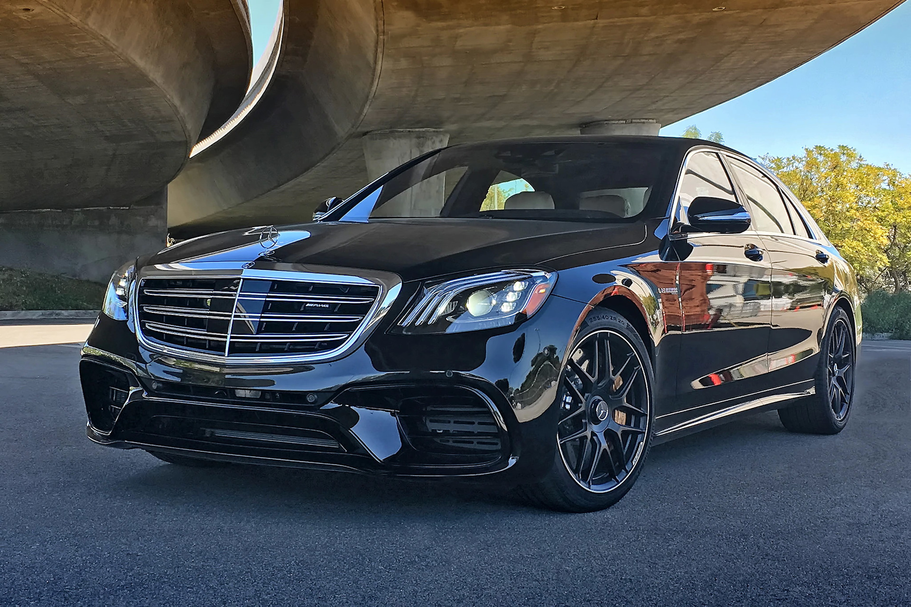
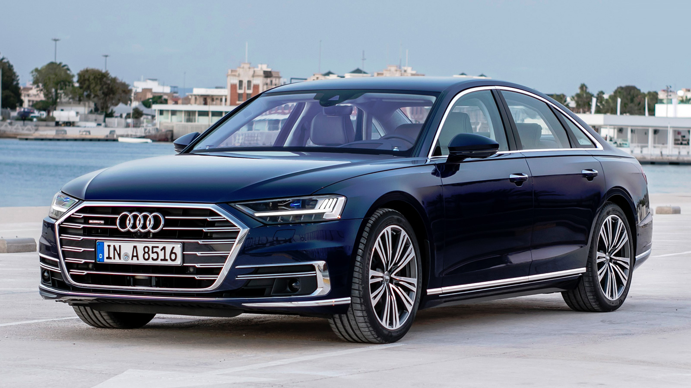
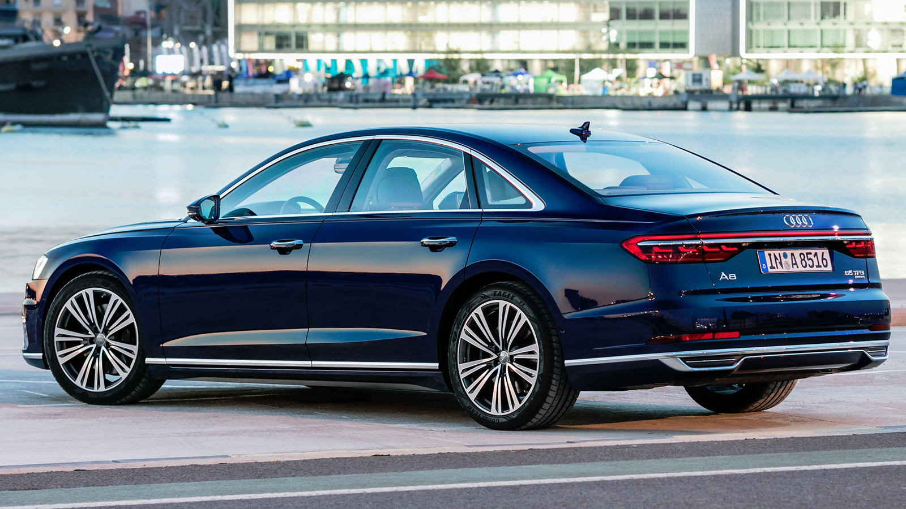

Mercedes-Benz
W222 AMG
- 

| Acceleration | Сonsumption | Top speed |
| 3,4 | 14L/100km | Top speed |
The Mercedes-Benz W222 is the sixth generation of the S-Class produced from 2013 to 2020, the successor of the W221 S-Class and the predecessor of the W223 S-Class. The W222 was designed during 2009. The original design proposal of the car was created by Il-hun Yoon, a Korean designer, who was inspired by the Mercedes-Benz F700 concept car. The exterior design was developed by a team of designers under the direction of Robert Lešnik. W222 has a similar design theme to the C-Class (W205) and E-Class (W213). In Europe, sales of the S 400 Hybrid, S 350 BlueTEC, S 350 BlueTEC Hybrid, and S 500 began in September 2013. US sales of the S 550 also began in September; the 4Matic four-wheel drive model went on sale in November, 2013. Additional models, including V12 models and those from AMG were released in 2014. The newest S-Class debuted on 15 May 2013 in Hamburg, Germany and entered production in Sindelfingen, Germany in June 2013. The production of W222 ends in September 2020 with the introduction of its successor, S-Class (W223), which made its world premiere on 2 September 2020 at the brand-new Factory 56 in Sindelfingen.In 1972, Mercedes-Benz introduced the W116 line, the first to be officially called the S-Class.[3] Produced from 1972 through 1980, the W116 series featured a four-wheel independent suspension and disc brakes. The 280, 350, and 450 (4.5L version) models featured SE and SEL versions. Production of the W116 totaled 473,035 units. This was a groundbreaking sedan for Mercedes-Benz, and for the first time in the company history, the car had an obvious, blatant and outward emphasis on safety placed above a pure styling viewpoint. The overall design incorporated numerous safety features developed from the "safety research vehicles" in the mid-to-late 1960s to the very early 1970s. These safety features were all newly introduced passenger-car "firsts" on a production vehicle: padded door trim around the windows, heavily padded steering wheel (later to be replaced by an airbag with the Mercedes-Benz abbreviation of SRS standing for the English-language term Supplemental Restraint System), more comprehensive safety padding on the dashboard and around the interior, dual asymmetric windshield wipers, headrests with a center depression to locate the occupant's head in a more central position during a rear impact, a rain-water management system to improve visibility consisting of deep channels on both sides of the windshield and flowing into deeply channeled rain gutters, including similar designs on the side mirrors, rounded body shapes along the edges, such as the tops of the front fenders, etc., designed to ameliorate pedestrian injuries, ribbed rear taillamp lenses which would remain clearer of dirt on the recessed areas, an easy-to-access first aid kit stowed in a recessed compartment on the rear parcel shelf prominently labeled with the universally recognized "cross" symbol which represents "first aid", and several other subtle safety features related to both active and passive safety. The Mercedes Benz S-Class is a classic chauffeur driven car,[4] and has frequently been used as standard by car hire companies. It is comfortable and safe as well as elegant looking; ideal for drives across the countryside or high class transport on a night out. The W116 models were large luxury sedans. The W116 was larger on the outside than the W108/W109 series it replaced, but had similar interior capacity, as the additional bulk was driven by several new and aforementioned engineering developments on car safety and occupant protection in a crash. The W116 introduced other improved passive safety features into the vehicle design, including a strengthened vehicle occupant shell. It was one of the first cars to be available with ABS, a driver's airbag supplemental restraint system (but not available at the vehicle's initial launch). Also, the W116 was the first mass production passenger vehicle offered with a turbocharged diesel engine. The 450SE, then the most powerful model in the W116 lineup, was awarded European Car of the Year in 1974. At the New England Auto Show in 1972 held in the fall season in Boston, the Monroney Label of a 1973 450SE was right at $13,000. 1973 was the first model year of the W116 for the US market. Starting in 1975, the W116 was upgraded with a new fuel injection system to comply with revised exhaust emission standards in European markets. A slight power reduction was a result of this update, but in 1978, a series of further engine upgrades restored original performance levels under the new fuel injection systems. Between 1973 and 1977, 997 Special Edition W116 models were made on order by Mercedes. These cars incorporated stronger body paneling and suspension and was 50 kg heavier than its normal counterpart.
Audi
A8
- 
- 
| Acceleration | Сonsumption | Top speed |
| 6,6 | 9L/100km | 250 |
The Audi A8 is a full-size luxury sedan manufactured and marketed by the German automaker Audi since 1994. Succeeding the Audi V8, and now in its fourth generation, the A8 has been offered with both front- or permanent all-wheel drive—and in short- and long-wheelbase variants. The first two generations employed the Volkswagen Group D platform, with the current generation deriving from the MLB platform. After the original model's 1994 release, Audi released the second generation in late 2002, the third in late 2009, and the fourth and current iteration in 2017. Noted as the first mass-market car with an aluminium chassis, all A8 models have used this construction method co-developed with Alcoa and marketed as the Audi Space Frame.[2] A mechanically upgraded, high-performance version of the A8 debuted in 1996 as the Audi S8. Produced exclusively at Audi's Neckarsulm plant, the S8 is fitted standard with Audi's quattro all-wheel drive system, and is available in short- and long-wheelbase form.Audi introduced the S8 4.2 quattro into the European market in 1996. The S8 followed the naming convention of other high-performance Audi "S" models such as the Audi A6-derived S6 and was similar in vein of Mercedes-Benz AMG models. In some markets such as the UK, the S8 was only available with the automatic transmission. Cosmetically, Audi differentiated the S8 from the A8 with solid aluminium alloy door mirror housings, chrome-effect beltline and lower front grille trim, and polished twin exhaust pipes, along with subtle "S8" badging. 14-way power adjustable and heated sports front seats with memory function were fitted as were heated rear seats. Standard alloy wheels were 18-inch cast aluminium alloy "Avus" six-spoke style. After the 1999 facelift, 20-inch polished nine-spoke RS wheels became an option. In 2002, 18-inch nine-spoke RS wheels became a no-cost option. At the same time of the A8's facelift in late 1999, the S8 received the same cosmetic upgrades. This update marked the release of the S8 to the North American market. Production of the D2 series S8 ended in September 2002. The D2 series S8 featured an uprated, 250 kW (335 hp) version of the 4.2-litre V8 with four valves per cylinder. From late 1999, Audi increased this to five valves per cylinder with power increased to 265 kilowatts (355 hp) and 430 newton-metres (317 lb⋅ft). From launch in 1996, European-market models came standard with a six-speed manual transmission. A sports-recalibrated version of the ZF 5HP24 five-speed tiptronic automatic, featuring "Dynamic Shift Programme" (DSP) was released a year later and was the only transmission available in most other markets. A retuned, 20-millimetre (0.8 in) lowered sports suspension included a 30 percent stiffer spring rate and 40 percent more compression damping in the shock absorbers. Speed-sensitive "servotronic" power assisted steering was also standard. The brakes featured Bosch 5.3 anti-lock braking system (ABS), with electronic brakeforce distribution (EBD), and worked radially ventilated front discs. From 2002, an upgraded Bosch 5.7 electronic stability programme became standard fitment.
Home